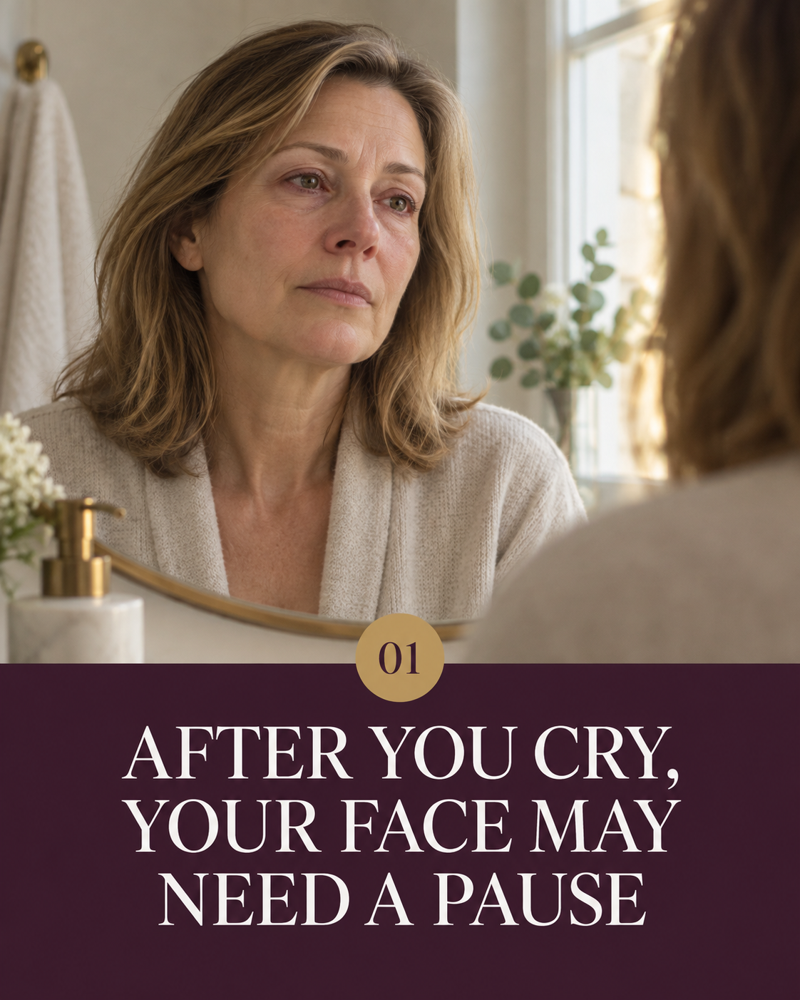
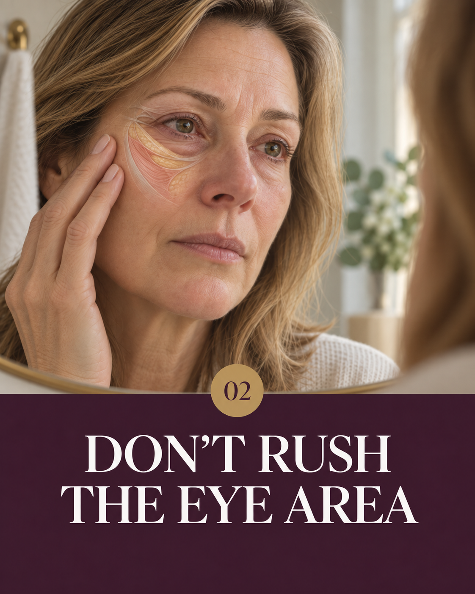

Emotional Days · Gentle Eye Care
After You Cry, Your Face May Need a Pause
You have already carried the feeling. Then you look in the mirror and see swollen eyes, flushed skin, and a face that does not quite feel like yours. You do not have to fix it right away.
A face can look temporarily puffy and flushed after crying. If the eye area is watery or tender, let it settle naturally first with a cool compress before trying any facial massage or tool routine.

Sometimes the crying is brief. Sometimes it comes after you have held everything together for everyone else. When it finally passes, the emotion may be quieter—but your face still shows that something happened.
Your eyelids may look puffy. The skin around your eyes may feel warm or sensitive. Your nose and cheeks may look flushed. Seeing those changes can create a second wave of discomfort: I need to make myself look normal again.
That urge is understandable, especially when you have somewhere to be. But the kindest response may be simpler than a routine: give your face a little time before deciding what it needs.
Why pressing immediately can backfire
When you cry, blood flow increases to the face, tear ducts are stimulated, and the delicate skin around your eyes retains temporary fluid. The tissue is active, warm, and easily sensitized.
Grabbing a firm tool or rubbing vigorously into swollen eyelids right away usually produces more redness, not less. Instead, comfort comes first: splash with cool water, drink a glass of water, and allow the acute swelling to ease naturally.

Part of the Eyes & Brows hub — explore the 10-second self-check, starting route, and related guides for this area.